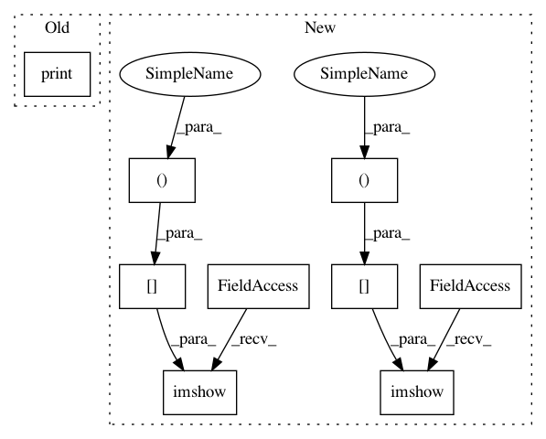

cf7d0bdc4133ea3248e054fa93aa2b5a6f8f2fca,doc/examples/compute_SNR_in_corpus_callosum.py,,,#,25
Before Change
nib.save(mask_corpus_callosum_from_cfa_img, "mask_corpus_callosum_from_cfa.nii.gz")
print("Saving illustration as cfa_mask.png")
fvtk.record(ren, n_frames=1, out_path="cfa_mask.png", size=(800, 800))
After Change
plt.figure("Corpus callosum segmentation")
plt.subplot(1, 2, 1)
plt.title("Corpus callosum")
plt.imshow((cfa[..., 0])[40, ...])
plt.subplot(1, 2, 2)
plt.title("Corpus callosum mask with a threshold of (%.1f, %.1f, %.1f, %.1f, %.1f, %.1f)" % threshold2)
plt.imshow(mask_corpus_callosum_from_cfa[40, ...])
plt.show()
In pattern: SUPERPATTERN
Frequency: 3
Non-data size: 9
Instances
Project Name: nipy/dipy
Commit Name: cf7d0bdc4133ea3248e054fa93aa2b5a6f8f2fca
Time: 2013-09-11
Author: stjeansam@gmail.com
File Name: doc/examples/compute_SNR_in_corpus_callosum.py
Class Name:
Method Name:
Project Name: nipy/dipy
Commit Name: 6c524d66dcd30d98a0f0c991252a3be644fa58ef
Time: 2013-09-11
Author: stjeansam@gmail.com
File Name: doc/examples/compute_SNR_in_corpus_callosum.py
Class Name:
Method Name:
Project Name: nipy/dipy
Commit Name: 749855e9d1b5bd1aa7b46db144503922fbc0a336
Time: 2013-08-06
Author: matthieu.dumont@usherbrooke.ca
File Name: doc/examples/brain_extraction_dwi.py
Class Name:
Method Name:
Project Name: nipy/dipy
Commit Name: cf7d0bdc4133ea3248e054fa93aa2b5a6f8f2fca
Time: 2013-09-11
Author: stjeansam@gmail.com
File Name: doc/examples/compute_SNR_in_corpus_callosum.py
Class Name:
Method Name: